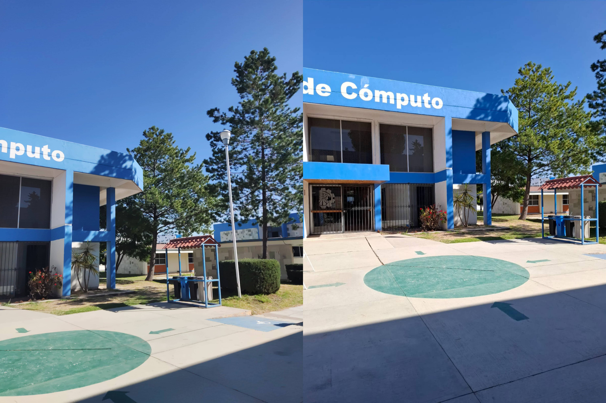
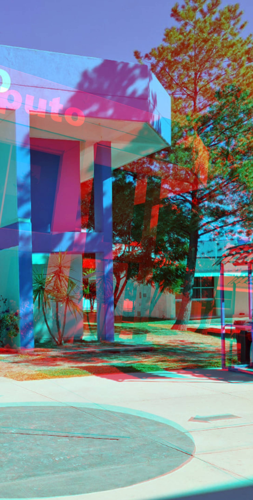
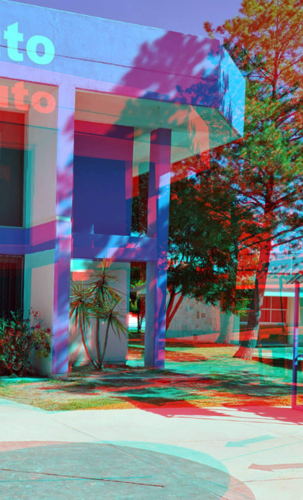
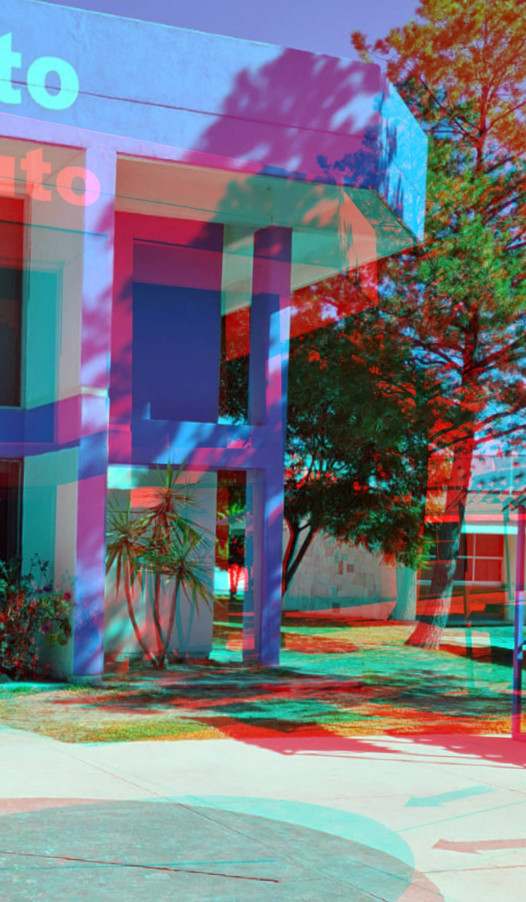

Bienvenido a la Galería de Imágenes Anaglifo de Edificios

Imagen de referencia para crear este anaglifo

Edificio cercano
Esta imagen tiene como objeto de enfoque el punto de reunión del piso

Edificio a media distancia
Esta imagen tiene como objeto de enfoque las palmeras debajo del edificio

Edificio lejano
Esta imagen tiene como objeto de enfoque el segundo árbol del fondo